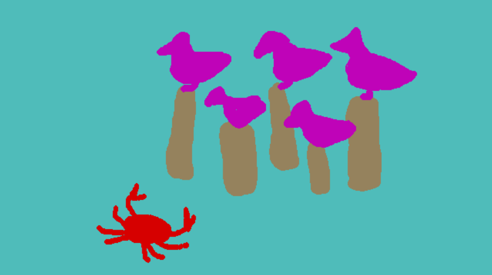
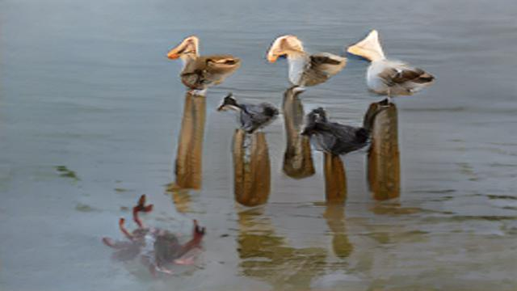
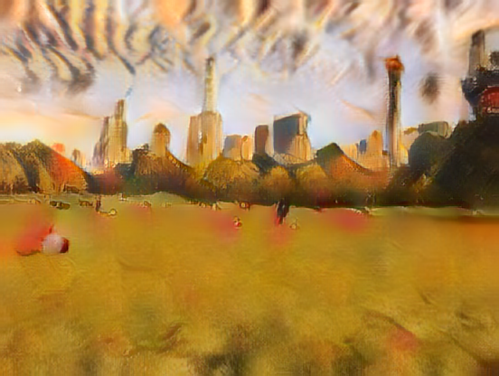
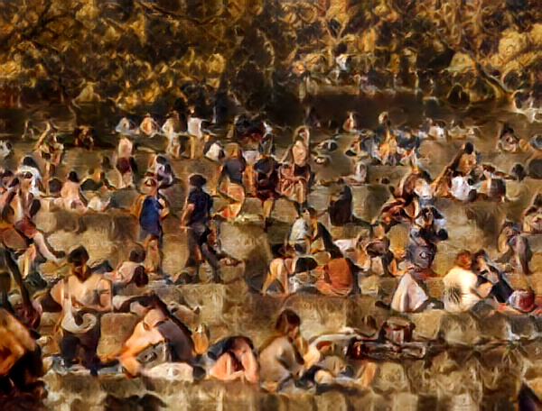

AI ART
We drew the scene of a movie within the SPADE COCO AI. In this case, this is a scene from the movie Finding Nemo.


These images represent the growing concern of isolation and social distancing due to the ongoing pandemic. People seem to have forgotten how deadly this virus is to some, as well as the limited equipment and capacity at hospitals in order to facilitate its patients. This series shows how people went from taking the situation very seriously, then carried on back to their normal lives as if nothing was wrong.


